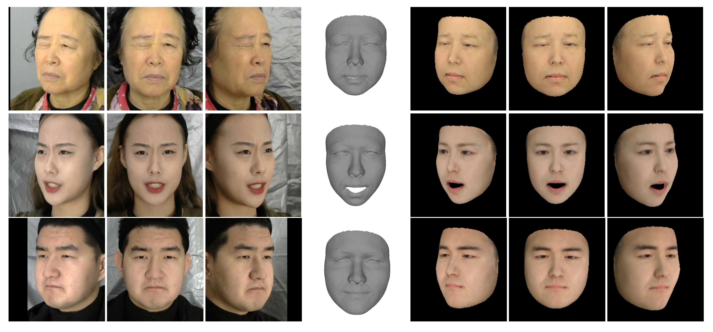

Chaolong Yang (杨超龙)
MRes Pattern Recognition and Intelligent Systems (since Fall 2020)
University of Liverpool


Publications

From 2D images to 3D model: Weakly Supervised Multi-View Face Reconstruction with Deep Fusion
Weiguang Zhao*, Chaolong Yang*, Jianan Ye, Yuyao Yan, Xi Yang and Kaizhu Huang
Association for the Advancement of Artificial Intelligence (AAAI), 2022 [The first round of review has passed, and the second round of review is in progress]
* equal contributions
Projects
Research on Semantic Segmentation Algorithm of 3D Point Cloud
Mainly responsible for the research on the semantic segmentation algorithm of 3D point cloud
based on the fusion of 2D image and 3D point cloud.
For the indoor scene data ScanNetv2, the 2D backbone is used to extract 2D smooth texture information
to enhance the feature information of the 3D point cloud, and finally 3D sparse convolution is used for
the 3D point cloud to achieve scene understanding.
Banner layout auto-generation with Machine Learning and Reinforcement Learning
Mainly responsible for the formulation of the banner size extension technical schemes.
The original banner automatically generates a new layout through Machine Learning.
The evaluation function of the banner layout is used for the reward function of Reinforcement Learning,
and each element agent adjusts the position through learning to realize the intelligent adjustment of the banner layout.
Comparison of architectural drawings
Mainly responsible for the formulation of technical schemes for comparison of architectural drawings.
Semantic segmentation backbone is used to extract the shear wall of construction drawings,
and execute the drawing alignment algorithm to align with the contract drawings.
Finally, the difference detection algorithm is executed, and the difference between
the construction drawing and the contract drawing is marked.
Patents
-CN201911070968.0, Method and system for adjusting plane design frame
-CN202010038919.5, Advertisement poster generation method
-CN201911416074.2, Poster templates generation method
-CN202010018860.3, Image style conversion method
-CN202010001984.0, An image typesetting method
-CN201911046872.0, Graphic design quality inspection method based on deep learning model
-CN202010138426.9, An image layout and model training method
-CN201911289942.5, Image processing method and device
-CN202010002011.9, An information filtering method
-CN202010327106.8, A method for proofreading drawings
-CN202010324170.0, Classification method and device for picture collection
-CN202010140746.8, Method for parsing flowchart
-CN202010158252.2, Image feature extraction method
-CN202010002108.X, Drawing image positioning and proofreading method
-CN201911341799.X, Proofreading method of drawings
-CN201911315035.3, Sunshine duration analysis method
-CN201911029245.6, A Method for Optimizing the Arrangement of Buildings
-CN201911019439.8, A GAN-based method for forecasting the duration of sunshine for building houses
-CN202010010424.1, Text error correction method
-CN201911372226.3, Method of copywriting generation
Honors/Awards
-National Scholarship (9 places for the school), 2017
-University Outstanding Student Scholarship (2 places for the school), 2018
-Outstanding graduates, 2019
Competitions
-The 17th Guangdong Provincial College Students Physical Experiment Design Competition (Second Prize), 2016
-"Challenge Cup" National College Students Extracurricular Academic and Scientific Works Competition Guangdong Division (Third Prize), 2017
-National Undergraduate Electronic Design Contest Guangdong Division (Second Prize), 2017